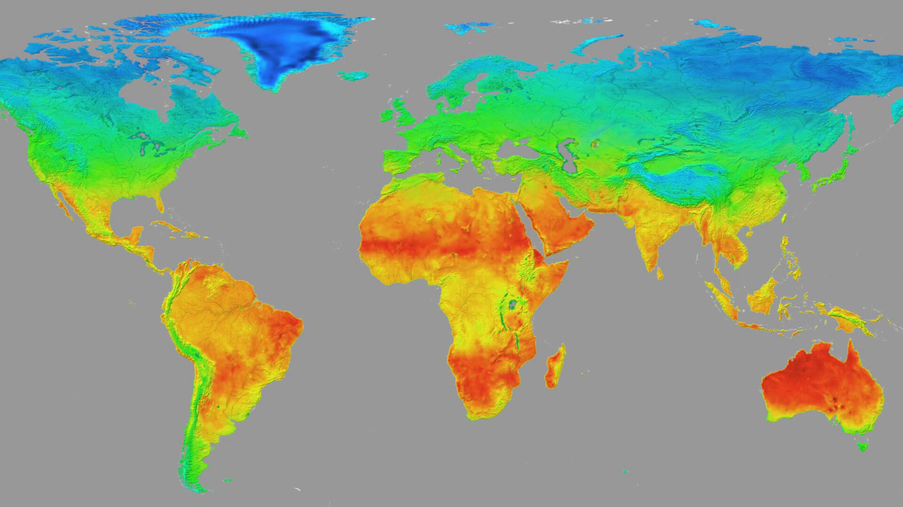

Python
In this project, several classical and novel deep learning models were evaluated to
determine the most suitable approach to forecasting future global
surface temperatures. This was performed to accurately visualize
the impacts of climate change across the world through a
user-friendly web interface.

SQL
For this project, a relational database system was designed and developed
for a restaurant supply delivery service, based on its structure and operations.
This was performed to improve data integrity and allow for easier access to
information and operations for system users.
Tableau
In this project, engaging reports and interactive dashboards were developed
in Tableau to evaluate the impacts of various factors on life expectancy in the United States.
This highlighted insights and trends from this analysis, allowing users to
explore fluctuations in life expectancy across the country over time.
Python, SQL
For this study, several machine learning approaches were evaluated to identify data mapping
patterns from customer-specific schema, with the goal of increasing the efficiency of the
mapping process for a global data syndication platform.
Python
The aim of this study was to gain an understanding of which basketball statistics were predictive
of team success in the NBA, assisting internal strategic planning and probabilistic modeling for
franchises and various stakeholders of the league.

R
In this project, several time-series models were developed to understand the temporal and
spatial patterns, demographic trends, and underlying factors associated with shooting
incidents in New York City.